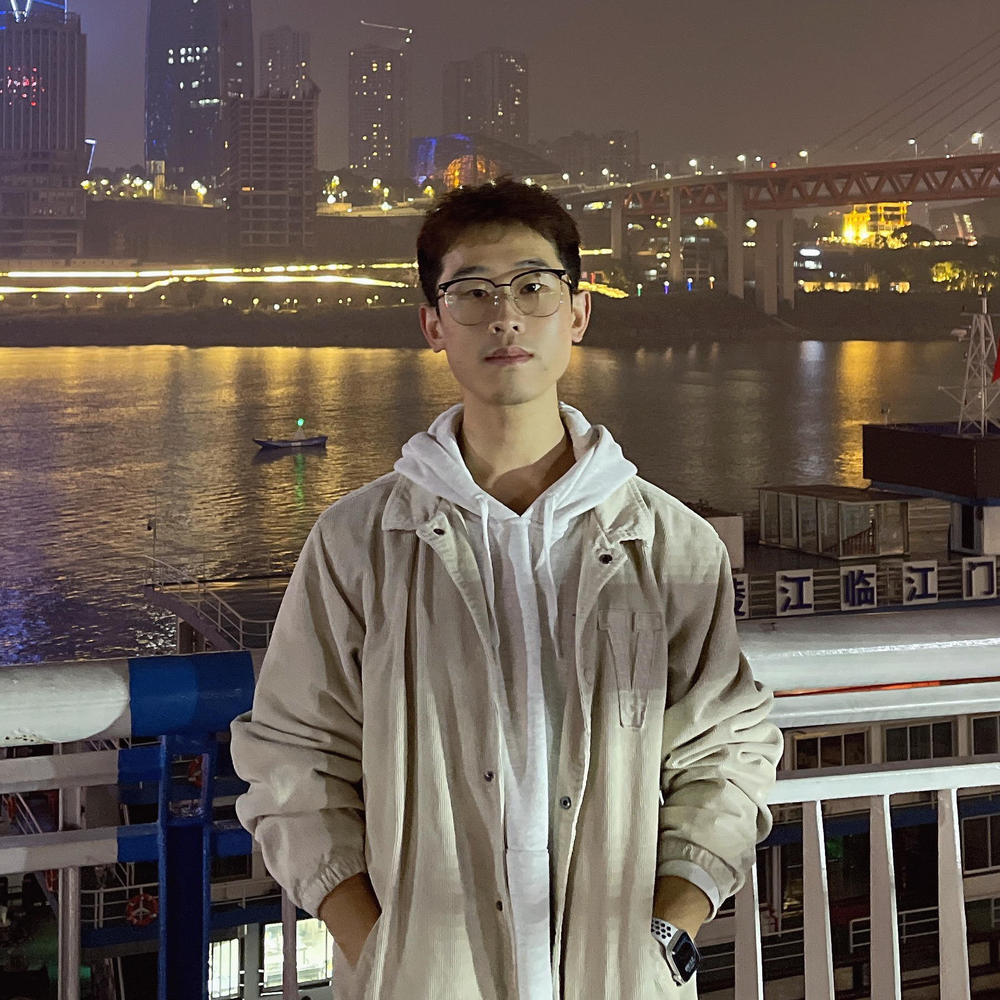
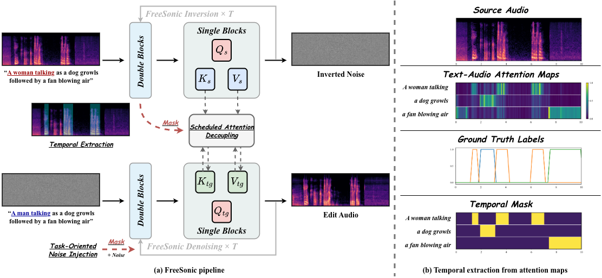
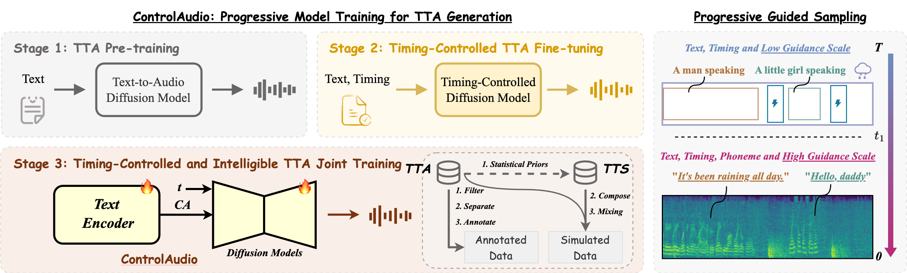
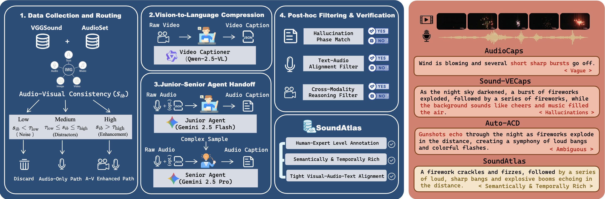
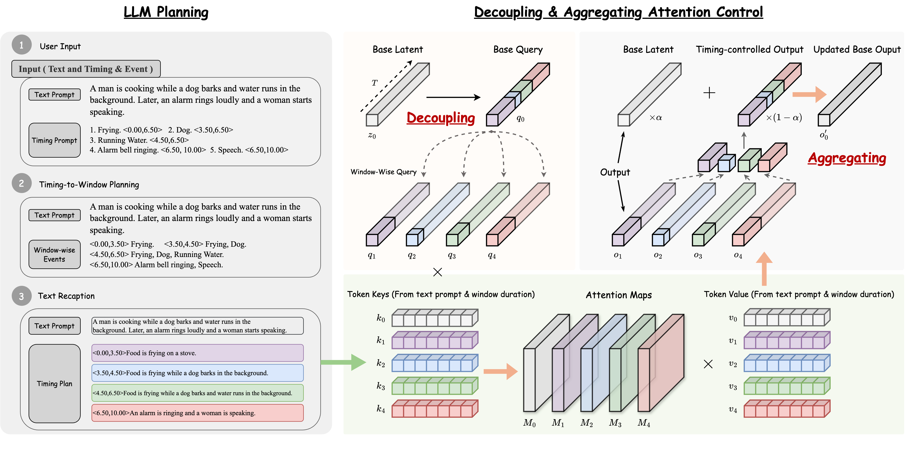

I am Yuxuan Jiang (江宇轩), a first-year PhD student at Tsinghua University. My research focuses on generative models, with a particular emphasis on audio generation and multimodal learning — building controllable, high-fidelity text-to-audio systems.
I am always happy to chat about audio generation, diffusion models, and multimodal learning — feel free to reach out by email.




© Yuxuan Jiang, 2026